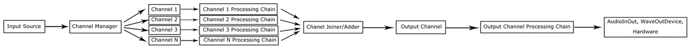

MIDI Synth is a program written in C#.NET. The program implements some basic digital signal processing techniques to generate and modify audio. Initially, the program only supported input via a MIDI device (hence the name), but later, support for reading a WAVE file as the input was added as well. The input can then be modified by using different filters, such as convolution based filters, filter envelopes, etc. The program is written in a modular structure, with the intent of being easily extensible. At the end, the resulting audio resides in the output channel, which can be played back through the speakers.
This program is intended for the processing of sound signals in real time (so, for example, some more complex convolution filters are not appropriate if they are computationally too expensive), however it would be possible to add a different output source (such as a WAVE file writer), making the program suitable for slower than real-time processing of audio files as well.
Click a heading to show detailed information.
Written in C#.NET (.NET 4.0) using WPF in Visual Studio 2010. Use git (google for msysgit on Windows) to clone this repository. Command line:
git clone git://github.com/mrbrdo/MidiSynth.git
Then open the solution (.sln file) in Visual Studio.
For very basic modifications (usage) open the ConfSetup.cs file and modify the Setup method which is responsible for setting up the input source and output channel. Example for a clarinet sound with an ADSR Envelope filter:
public static void SetupClarinetWithEnvelope(out IAudioInputSource inputSource, out CC_Channel outChannel)
{
// The input source will be a scale player which keeps looping the notes from the C-Major scale
inputSource = new IS_ScalePlayer(Info,
// Lambda expression for setting up subchannels for each note being played
(CC_Channel chan) =>
{
// Create a filter chain for the subchannel
List<IAudioChainMember> is_chain = new List<IAudioChainMember>();
// Oscillator for clarinet sound (generates signal from frequency information)
is_chain.Add(new CM_Oscillator(chan, (float freq, int step, int sr) =>
{
double oi = 2 * Math.PI * freq * step / (double)sr;
return (float)(Math.Cos(oi) + 0.375 * Math.Cos(3 * oi) +
0.581 * Math.Cos(5 * oi) + 0.382 * Math.Cos(7 * oi) +
0.141 * Math.Cos(9 * oi) + 0.028 * Math.Cos(11 * oi) + 0.009 * Math.Cos(13 * oi));
}));
is_chain.Add(new CM_ADSR_Envelope(chan, new float[] { 0.3f, 0, 0.3f }, 1, CM_ADSR_Envelope.ADSRLinearFunction));
// Assign the created filter chain to the subchannel
chan.SetChain(is_chain);
},
// duration of each note
500);
// Create an output channel
outChannel = new CC_Channel(Info);
// Create a filter chain for the output channel
List<IAudioChainMember> chain = new List<IAudioChainMember>();
chain.Add(new CM_Normalizator(outChannel)); // normalizator
chain.Add(new CM_BufferVisualizer(outChannel, 800)); // visualizer (plots the signal in real time to the screen)
// Set the filter chain to the output channel and activate it (output channel should always be active)
outChannel.SetChain(chain);
outChannel.Activate();
}
Observe the following diagram of the basic operation of the application.
For example:
An input source does not take input from any other component of the system. It is the part of the system that generates input for other components. If you look at the IAudioInputSource interface, you will see that the only method that an input source must implement is float GetOutput(). This method will repetadly be called in real-time and its value will be fed as the input into the main Processing Chain.
A simple example is the IS_ScalePlayer input source. This input source creates a seperate thread which will change the note being played every 1 second. Behind the scenes, it uses the NotePlayer channel manager, which is described later in this document. Since this input source only plays one note at a time, the use of a channel manager is not required, but it was used to avoid unnecessary code duplication. When the note is changed, the appropriate channel is created in the channel manager. When the GetOutput method is called, it will return the output signal provided by the channel manager (the channel manager processing chain will usually contain an oscillator which will convert the frequency of the current note (the input into the channel manager) into an actual signal in the time domain).
A slightly more complicated example is the IS_MidiIn input source. Similar to IS_ScalePlayer, this input source also uses the NotePlayer channel manager, however this is actually necessary here, because more than one note can be played at the same time. To capture MIDI input (e.g. from a MIDI keyboard), a free library C# MIDI Toolkit is used. When a key on the keyboard is pressed, it gets translated into a frequency, which is then passed to the channel manager to create a channel playing that frequency. When a key is depressed, the previously created channel is destroyed, again via the channel manager.
The basic path of the signal would be:
However, if we are playing multiple notes at the same time, there is a problem with the above path. The problem becomes most apparent when we use an envelope filter (e.g. ADSR envelope). If we are playing two notes at the same time, and at some time one of the note is depressed, the release part of the envelope should kick in, gradually silencing that note. If we only have one channel, we cannot apply this filter on only one note, because our single signal contains both notes combined (this way, we can only decrease the volume of both notes together).
To get around this problem, the concept of channels is introduced. In the case of playing multiple notes, each note will be on its own channel. Each channel has its own processing chain (collection of filters that are applied), therefore we can apply an ADSR envelope individually on each note. After each subchannel is processed individually, they are all combined by a channel adder (described below) into an output channel. The output channel again has a processing chain with filters that are to be applied on the resulting (combined) signal.
The channel adder is a very simple component which takes a list of channels, and simply sums their output signal values into a single signal value. Note that because of this sum operation, the signal must be normalized or clipped before being passed to the system.
The channel manager concept was introduced to simplify playing notes. When a note is "activated", the channel manager will create a new (sub)channel with its frequency as the input. It will set up the same (but individual) processing chain for each of these channels. When a note is "deactivated", its channel will simply be destroyed (please note that this is not actually the case, due to problems with the ADSR envelope - read about this under Special Chain Members - Channel Terminators). For performance reasons, each channel has an active property - instead of creating and destroying channels, we can simply use this property to activate/deactivate a channel - this is solely for performance reasons. To obtain an output signal from the channel manager, the channel adder described above is used to combine the output signals of all its subchannels.
Each channel has a processing chain, which is a collection of Chain Members (many of chain members can be thought of as filters). If you look at the IAudioChainMember interface, you will see that each channel must implement a void Init(CC_Channel channel) method (this way, a chain member can obtain information about the channel, such as the sample rate), and a float Process(float input) method (which takes an input signal and processes it into an output signal). The abstract class AudioChainMember, which implements IAudioChainMember, contains code to automatically store the channel received by the Init method into a property named c. Most chain members build on AudioChainMember instead of IAudioChainMember, simply to minimize code duplication.
A channel has no memory of its own, so chain members that require memory of previous values of the signal (like the convolution filter), must implement such memory by themselves. An example of how to do this can be seen in the CM_Convol chain member - basically one just needs to create a float array and shift it every time a new signal value is received.
This is a simple convolution based filter. Besides the channel parameter required by the AudioChainMember abstract class, its constructor also takes a float[] h parameter, the impulse response. The filter generates an output signal based on the input signal, impulse response and memorized previous signal values.
The oscillator chain member expects a frequency as the input (as opposed to most other chain members which expect an actual sample as their input). The oscillator will then synthesize a sound of the desired frequency. The oscillator takes a second parameter to its constructor - OscillatorFunctionDelegate oscillatorFunctionDelegate. This parameter is a delegate (i.e. a lambda function) which must match the following skeleton: float OscillatorFunctionDelegate(float frequency, int step, int sampleRate). This function is the heart of the oscillator and will be used to generate the output signal. An example sine wave oscillator lambda function ( output = sin(2 * PI * freq * (time / sample_rate)) ) is already contained in the class itself:
public static OscillatorFunctionDelegate SineWave = (float freq, int step, int sr) =>
{
double oi = 2 * Math.PI * freq * step / (double)sr;
return (float)(Math.Sin(oi));
};
This is an implementation of the Karplus Strong string synthetizator. The expected input into this chain member is (as with CM_Oscillator) not an actual sample but the desired frequency of the string sound to be synthesized.
This is a simple real-time signal normalizator. The output signal being passed to hardware for playback is expected to be in the range [-1.0, 1.0]. If a signal outside this range is encountered, the normalizator will dynamically adapt to this change and normalize this and all further signal values according to this maximum value.
As an example, if we keep the signal at value 0.5, it will be translated to 0.5 (0.5 / 1.0) by the normalizator until a signal with the value of (for example) 10.0 is encountered. At this point, 10.0 will be translated to 1.0 (10.0 / 10.0), and if signal values of 0.5 follow, they will become 0.05 (0.5 / 10.0).
This chain member is special. The project's GUI code contains a BufferPlot WPF (Windows Presentation Foundation) control. This control has a UpdateBuffer method with a float[] buffer parameter. The control will visualize the contents of this buffer on the screen.
The CM_BufferVisualizer chain member will memorize a number of previous values of the signal at its input. Every (by default) 0.2 seconds, it will call UpdateBuffer on the BufferPlot control, with the memorized buffer as the parameter. The BufferPlot control will then update the drawing on the screen to represent this buffer. This way, we can observe the signal graphically in real time. Note that the buffer visualizer does not necessarily need to visualize the output signal. It will visualize the data it receives as the input - if you were to put the visualizer before the CM_Oscillator or CM_KarplusStrong, frequency value would be plotted instead of an signal values. Please note that due to a current limitation of the code (only one BufferPlot control is present in the GUI), you should only include the CM_BufferVisualizer chain member in the output channel. Including it in the processing chain of subchannels of a channel manager will lead to unexpected results (since there will usually be more than one of such subchannels).
An ADSR Envelope is a filter that affects the loudness progression of a note being played (read more). The attack, decay and sustain are trivial to implement, but there is a problem when trying to implement release if we are dealing with real-time input, like we are. As explained, the channel manager will create a channel when a note is activated, and the channel should be destroyed when the note is deactivated. However, the release part of the envelope only kicks in after the note has already been deactivated. If the channel was destroyed at this point, the release part of the envelope cannot be realized, because the channel does not exist anymore and the frequency information about the note being played is lost. This is the reason that another property had to be introduced to the channel: InputEnded. Instead of destroying a channel after the note was deactivated, the InputEnded property is set to true. This allows us to realize the release part of the envelope before destroying the channel. After the release part has ended, the channel can be destroyed. However, this introduces another problem - if we are not using the CM_ADSR_Envelope, subchannels in a channel manager will never be destroyed, which is an unacceptable performance issue (and in fact a memory leak). This brings us to the next chain member - CM_ChannelTerminator.
As a consequence of the (perhaps poor) design decision on how to handle the release part of the ADSR envelope, a chain member that terminates a channel is required in case the ADSR envelope (which will terminate a channel after the release part of the envelope is finished) is not used. In this case, insert a CM_ChannelTerminator at the end of channel manager subchannels' processing chains, to ensure the channels will be properly destroyed when their input ends. Note, when using CM_ADSR_Envelope, do not use CM_ChannelTerminator and vice versa - they are mutually exclusive. All channel manager's subchannels require a channel terminator (either CM_ADSR_Envelope or CM_ChannelTerminator). The output channel does not require a terminator, because it is never destroyed.
I personally think the current solution is bad and would require quite a bit of refactoring to eliminate the need for this "hack".
Audio ouput is handled by the AudioInOut class. At the moment, different audio output options are not supported (such as output into a WAVE file, for example). The only option at this point is outputting the signal directly to the sound card, to be played by the speakers. The constructor for AudioInOut takes 3 parameters: an input source, a single (output) channel, and channel information (such as the sample rate).
The class creates a thread, which contains a continious loop performing the following:
There is room for improvement here, the particular problem being that when an audio buffer becomes available, the input source is queried rapidly for many signal values until the buffer is filled. After that, no signal value is queried from the input source until the next buffer becomes available. This means the samples (signal values) are not equally distributed in time. This can become a problem especially when the buffer_size / sample_rate ratio is high. When using a WAVE file as the input, this problem is irrelevant - it is only a problem when dealing with real-time input. For example, when using the IS_MidiIn input source, a buffer_size / sample_rate ratio of under around 50 milliseconds is sufficient to make this problem not noticable, because a human will typically hold a key on the MIDI keyboard for longer than 50ms, and a human will typically not be able to hear the difference between a note lasting e.g. 100ms instead of 125ms.
The purpose of the waveOutHelper subproject, a DLL written in C++, is to provide real-time audio playback functionality to the .NET application. The support for this functionality is absent or very limited in .NET, hence the need for this subproject. To implement this efficiently, the best choice is to use Win32API, which is tedious to do in .NET managed code, therefore that functionality was extracted into this DLL.
WaveOutDevice.cpp defines a class abstracting the low-level multimedia Windows API. Most of the work here is in managing two (or more) audio buffers, which are constantly being exchanged by the operating system (i.e. double-buffering), to achieve seamless real-time audio playback without glitches like crackling sounds. A named semaphore is used to signal the main application that a buffer is ready to be written (.NET already supports semaphores so using a semaphore is the obvious choice).
Because exporting C++ classes from DLLs is not as compatible with all applications as is exporting simple functions, waveOutHelper.cpp defines just a few functions which manage the class created in WaveOutDevice.cpp. These "helper" functions are then called by the .NET applications (using .NET P/Invoke) to achieve real-time sound playback. By introducing a "handles" concept (named deviceId in the code), the DLL is able to create multiple output devices if necessary (just call OpenWaveDevice multiple times to obtain multiple output devices).
The original project was written by Jan Berdajs (email: mrbrdo@gmail.com), student at Faculty of Computer and Information Science, University in Ljubljana, in the year 2011, under the mentorship of prof. Kodek and dr. Rozman.